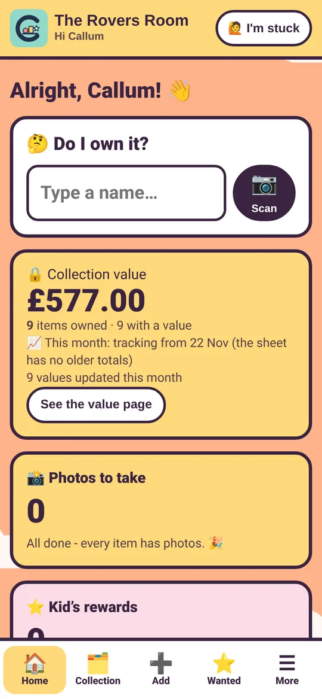
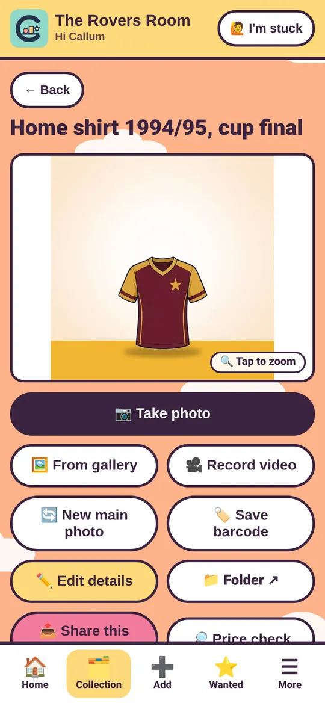
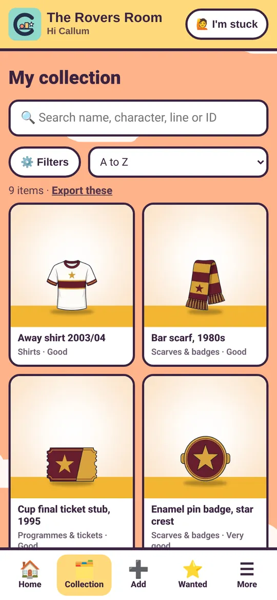
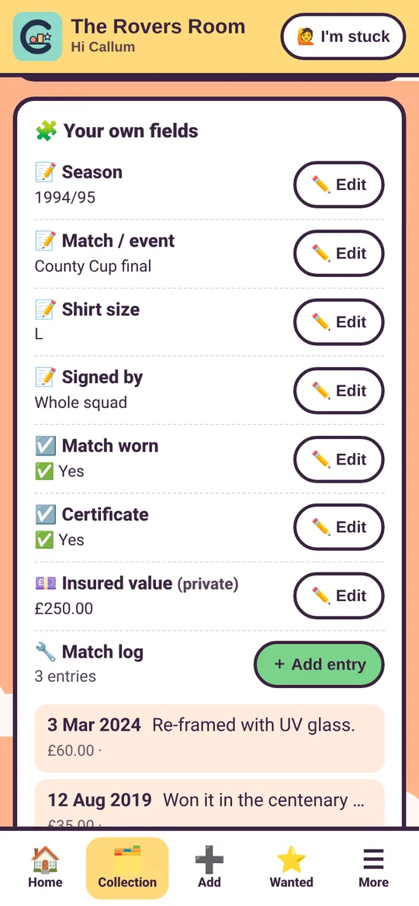
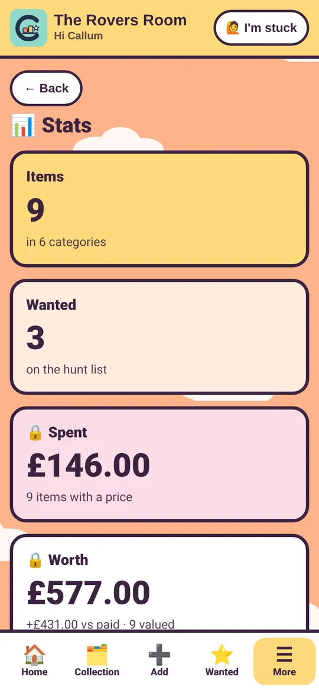
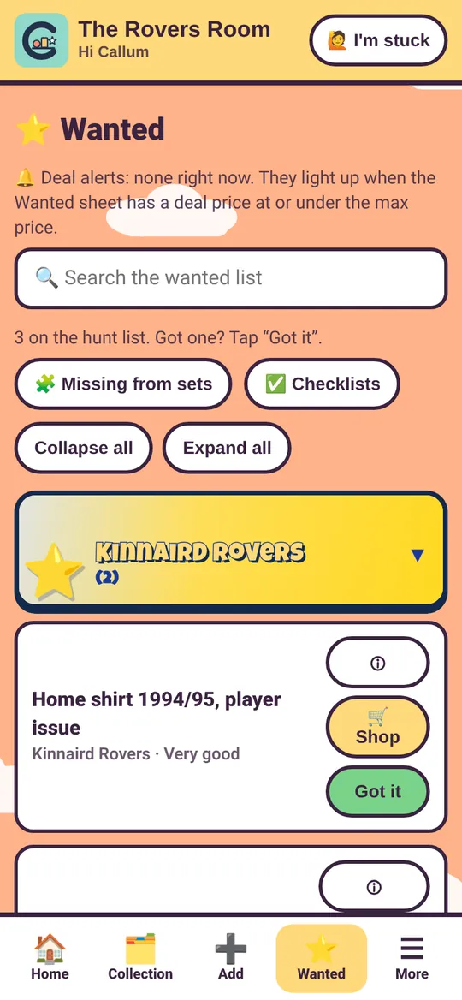
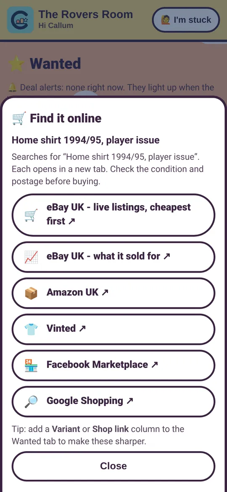

Example
Home shirt 1994/95, cup final
- Season
- 1994/95
- Match / event
- County Cup final
- Signed by
- Whole squad
£220+£185 vs paid
Example collection · invented data
Football memorabilia
Callum has followed Kinnaird Rovers, an invented Highland League side, since he was six. In Collecson each piece has its season, match, size and who signed it, plus a match log of the days that made it special.
C“The Rovers Room” · Callum, Aberdeenshire (an invented collector)


Tap an item to see its details · all items are invented examples
Your own fields
Out of the box Collecson knows names, photos, condition, year and value. For this collection the owner tapped ＋ Add field a few times:
Example item · Shirts
Home · Very good · Framed
🔒 Money fields and log costs only show after the owner unlocks with their PIN. Family can fill in the other fields; Kid mode never shows prices.
The collection
Each one has its own photo folder in Drive and a row in the owner’s Google Sheet. These are illustrations of invented items.


In the app
Real Collecson screens, running the invented example collection.



Value
Paid, worth and the difference, item by item. Only the owner sees money.
Wanted list
Each wanted item keeps a max price and notes. In the app one tap opens live searches: eBay UK (live and sold), Amazon UK, Vinted, Facebook Marketplace and Google Shopping, or the owner’s own saved shop link.
Kinnaird Rovers · Very good · Number 9 if possible
Kinnaird Rovers · Any · Completes the 60s run
Supporters club · Good · Maroon and gold version
On this page the shop buttons are examples only. In the app they’re search links: they don’t guarantee the lowest price, and no shop pays to appear.


ROOM FOR WHAT YOU LOVE
Collecson works for football memorabilia and just about anything else you collect. It isn’t on sale yet: no payment, sign-up or public template link.